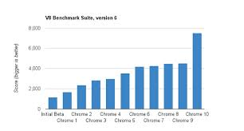

JavaScript X

自己紹介
- 名前:チェン ハン
- ICT事業部 WEBソリューション部 ECSuitesチーム
- WEB開発暦5年くらい
- 技術が好き
簡単な歴史
- 1995：JavaScriptの誕生
- 90年代後半から: ECMA-262の標準化・現代仕様ベースライン(ES3)
- 2005: Gmail誕生・Ajaxの確立
- 2008～2009: ES4の失敗・次世代への掛け橋となるES5
- 2015.6～: ES6・より良いWEB言語
JavaScriptの誕生

Brendan Eich: JavaScriptの設計者、1995年にNetscapes社に雇われ、Netscape Navigatorで動作する新しい言語を作ることになった。
そして、たったの10日間で、最初のJavaScriptを納品した。
10日での納品となると...
...とにかく他言語の良いところを参考
- Cの文法
- Javaのデータタイプとメモリ管理
- Scheme言語の第一級関数
- Self言語のプロトタイプ
やはり10日はきつかった...
- 20年後の今日でもはまられているトリック
グローバル変数、スコープ、セミコロン自動補完、typeof、自動型変換、NaNなど... - 最大なトリック、遅すぎる
不意の時期もあった
- 1995年にMicrosoftがIEを発表、第一次ブラウザ戦争が始まる
- セキュリティ対策よりも新機能の盛り込まれが中心だった
- 2000年に、MS IEの勝利として第一次ブラウザ戦争が終わった
- MSはWEBの会社ではなかった、敵なしIEは進化しなかった
- ついに、JSをoffにするようの流れにもなった
- ECMAScriptとして標準化された(説明が必要)
パパの悔い
the part that is good is not original and the part that is original is not good
Ajax開発者達はJSが好きだと言っているが、JS嫌いな人も大勢にいる、私もその一人だ...サミュエル・ジョンソンが言うように: それの良いところはオリジナルではない、それのオリジナルは良くない
JavaScriptをDisてません
- 私はJavaScriptを愛している
- JavaScriptの未来を知るため、まず過去を知るべき
- より良いJavaScriptを知る前に、醜いJavaScriptを知るべき
JavaScriptの逆襲
HTML5と共に進化
- 第二次ブラウザ戦争
- Google Map、GmailによるAjaxの確立
- ACID3：ECMAScript中心のセキュリティテストケース
- V8エンジン
- ES4・ES5
V8：JavaScript高速化!
JITエンジン
V8：JavaScript高速化?
型？
function add (a, b) {
return a + b;
}
var c = add(1, 2);
//JIT：よし、出番だ、速くしてみせる
int function add (int a, int b) {
return a + b;
}
//どうや、早くなっただろう
...
var d = add('hello', 'world');
//JIT: フザケルナ！
JITエンジンの気持ち

架け橋なるES5
"use strict;"
ES4はES3と互換性がないため、廃案、ES5はES3と互換性を持つことは当初から目標であった。- エラーとなるべきところでは、エラーを出す
"use strict"; mistypedVaraible = 17; // エラーになる、不意にグロバル変数を作れなくなった - 危険な処理を防ぐ
"use strict"; delete String.prototype; // throws a TypeError
現代JavaScriptが目指す所
ECMAScript 6
- アプリ
- より良いライブラリ
- WEBの処理系
WebAssembly
ブラウザが実行可能なバイナリ形式
- asm.js
"use asm"; var a = 10 | 0; //明示的にaを数値と宣言する int a = 10; - WebAssembly
ご清聴ありがとうございます